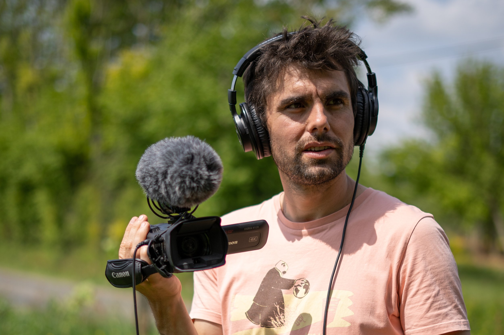

Des vidéos engagées au côté du milieu agricole et rural
Le projet
L'avenir est dans nos bottes
Mêler intimité et expertise, témoignages et réflexions, pour aborder les questions du renouvellement des générations agricoles et les actions possibles pour maintenir des fermes nombreuses en Bretagne.


Le contexte
Un avenir préoccupant
D'ici 10 ans, l'heure de la retraite aura sonné pour la moitié de nos paysan·nes : il y aura 50% de fermes en moins pour nous nourrir puisque seule 1 ferme sur 3 est reprise.
Les conséquences sont nombreuses : désertification du milieu rural, fermeture des paysages, diminution des produits locaux, industrialisation de la production agricole, agrandissement des fermes.
Heureusement, des "néo-ruraux" se lancent en agriculture et offrent ainsi au milieu agricole et rural une belle opportunité pour se renouveler et préserver les fermes. Il est donc primordial de permettre à toute personne motivée de se questionner sur le métier de paysan·ne.
L’objectif
Rendre accessibles les témoignages
De multiples acteurs interviennent de près ou de loin dans l'enjeu de la transmission agricole (paysan·nes, porteur·ses de projet, structures d’accompagnement, acteurs économiques, organisations professionnelles, enseignant·es, citoyen·nes consommateur·trices, etc.).
Entre doutes et espoirs, expertises ou intuitions, chaque acteur se forge sa propre vision de l’avenir agricole.
Mettre en lumière ces témoignages à travers des capsules vidéos est l’essence même du projet.

Vidéos du projet
Retrouvez ci-dessous un lien vers chacune des vidéos du projet.
Pour voir l'ensemble des vidéos, rendez-vous sur
la chaîne YouTube de L'avenir est dans nos bottes.